House in Khao Yai
Location: Khao Yai, Thailand
Completed: 2020
Category: Houses
Nonhuman: -
Collaborator: Park + Associates

When international borders reopened, we visited the site for the first
time—one year after the project was commissioned.
On arrival, we set aside hundreds of construction drawings made during
lockdown and allowed the land itself to redirect the design.
Contextualism with local materials
House in Khao Yai, 2023
The site is a natural granite hillside, with soil only about 300 millimetres deep in places. Streams follow the existing terrain and are formed with boulders found on site, without cutting into the slope.
Planting developed gradually after the foundations were complete. Before each phase, we visited local nurseries and selected plants in response to the conditions we found on site.
This project is not an expression of our will, but an exercise in listening. It asks us to remain humble—to let design respond to the land rather than command it.


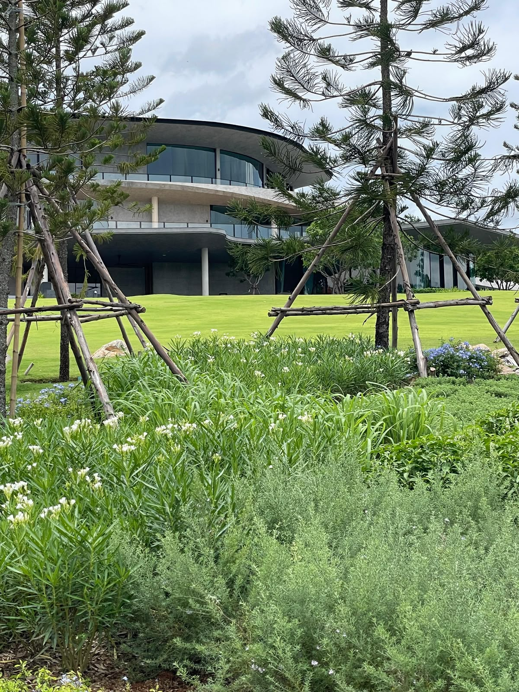


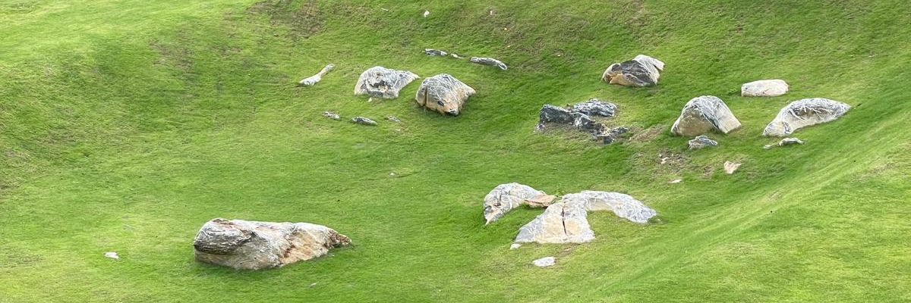
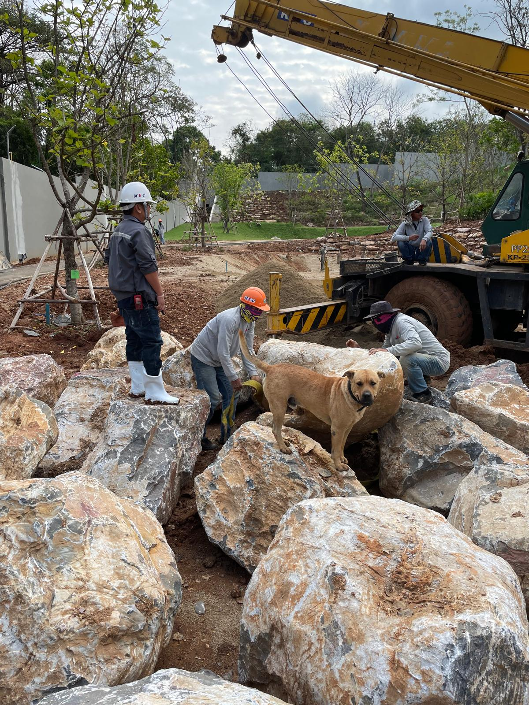

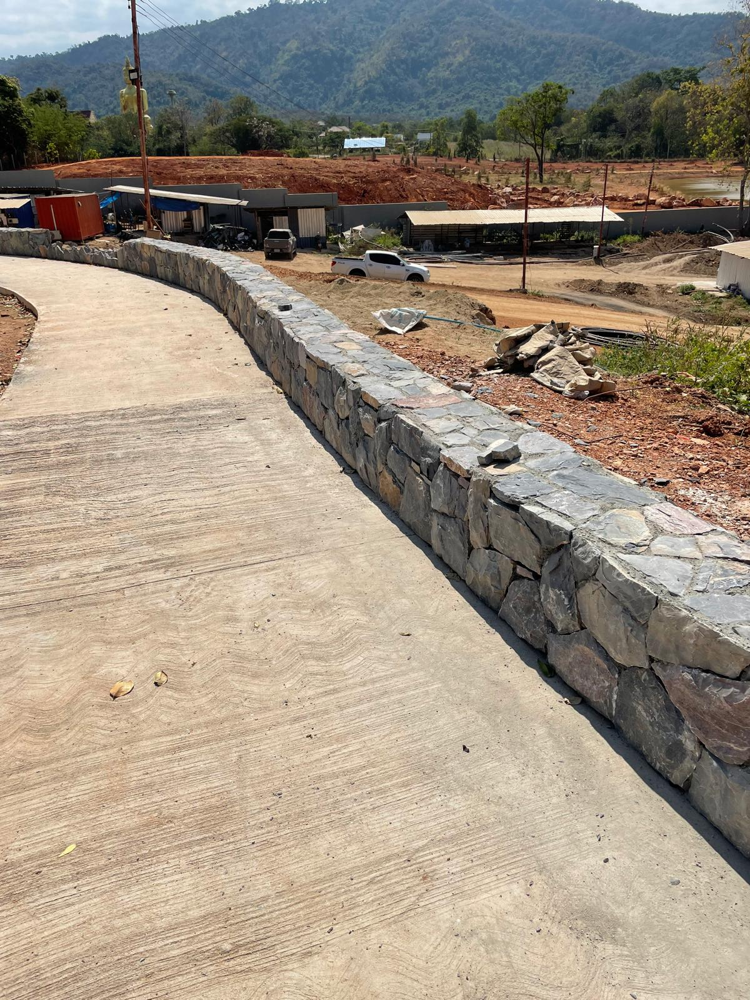

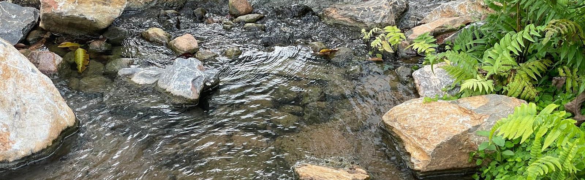


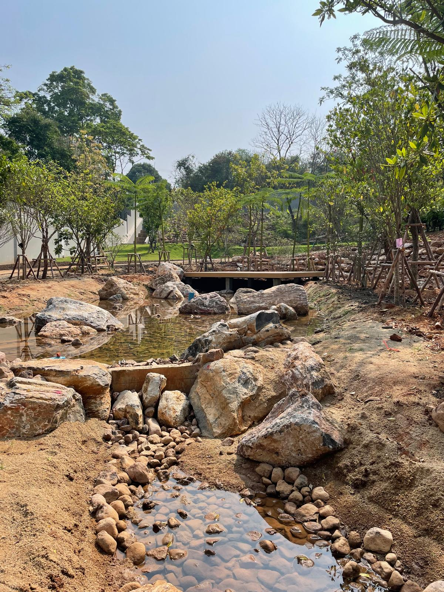


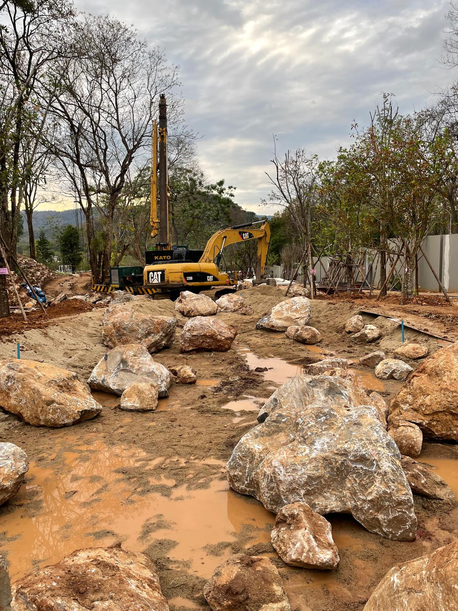
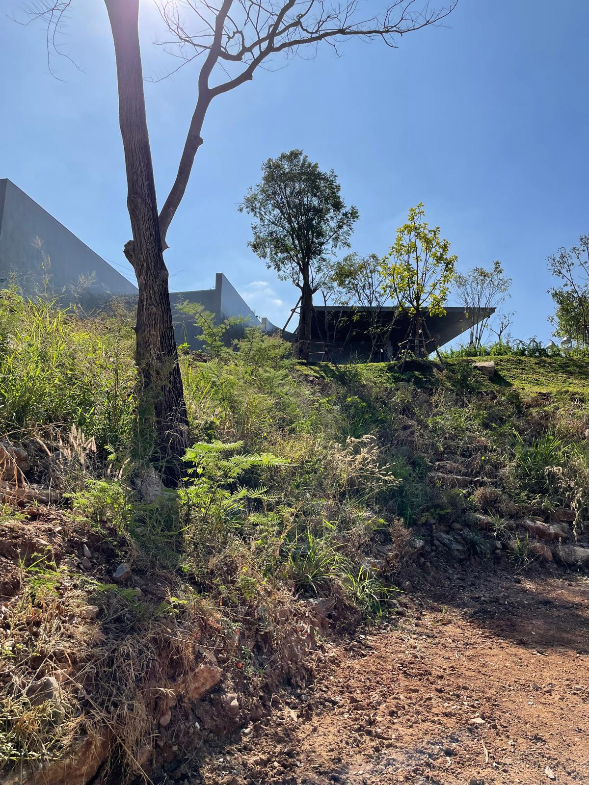
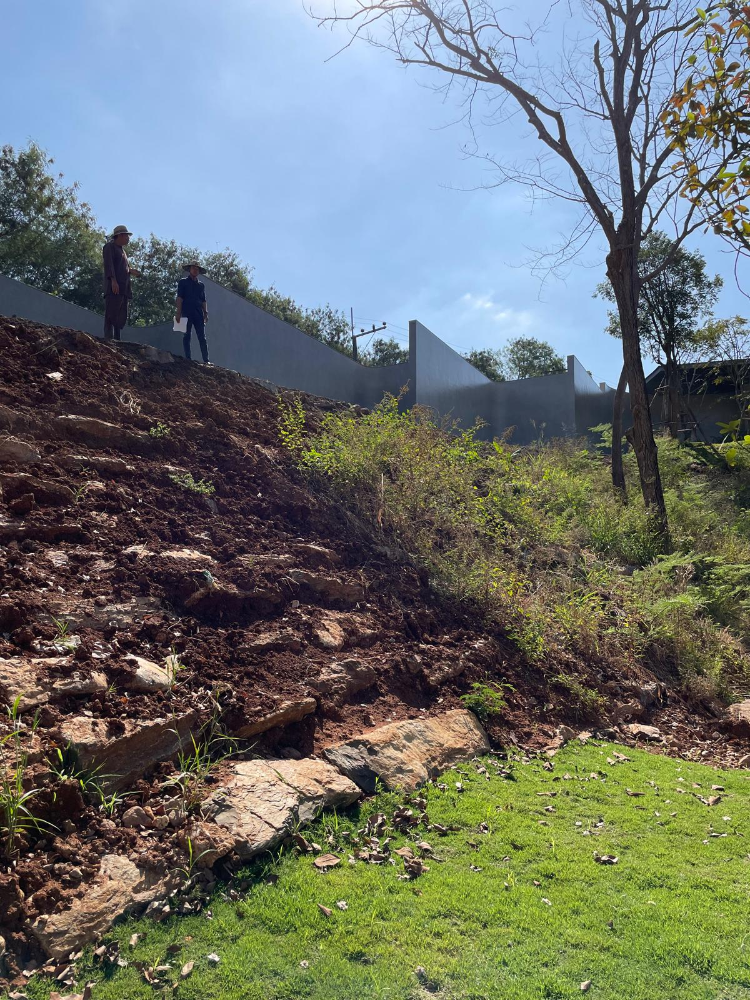
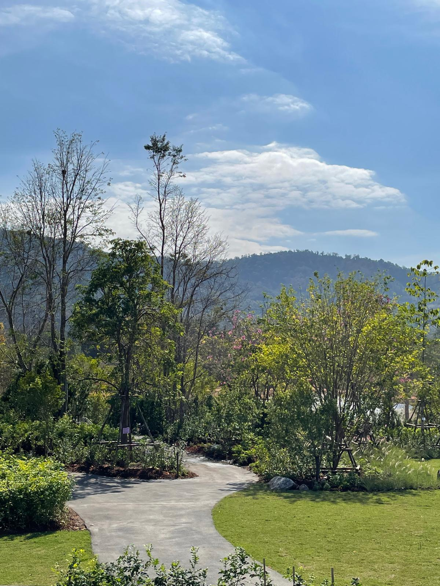
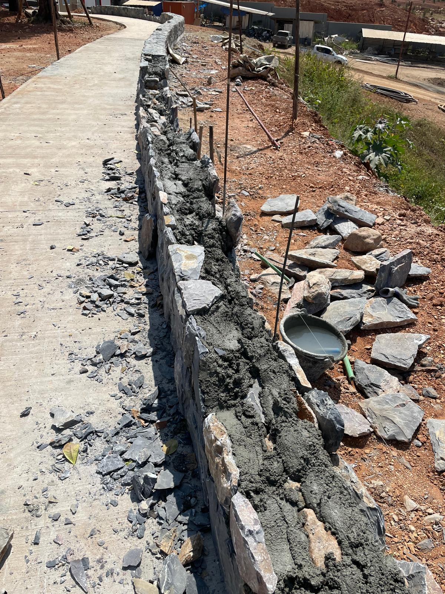


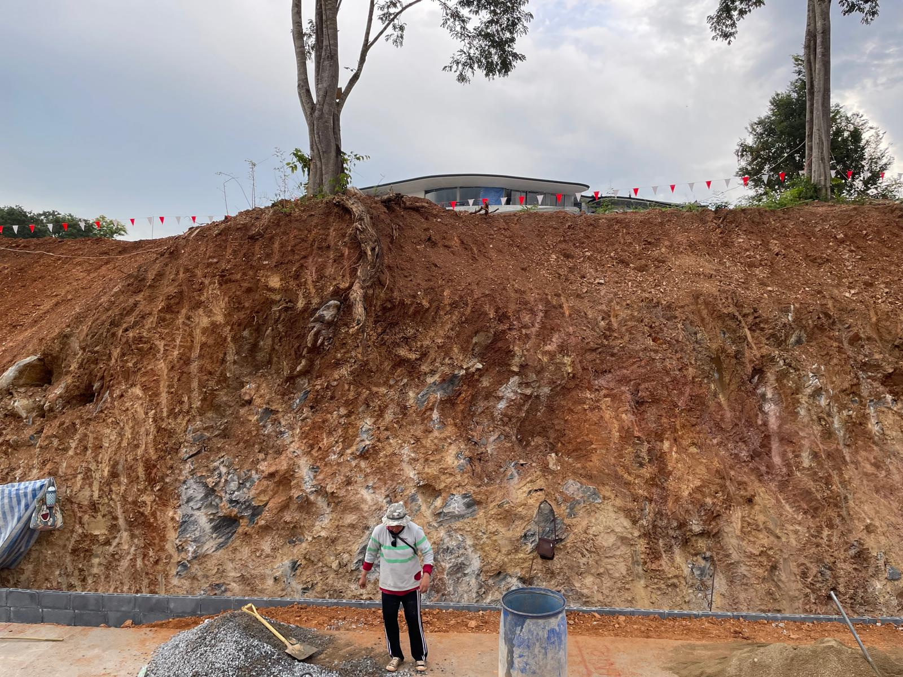
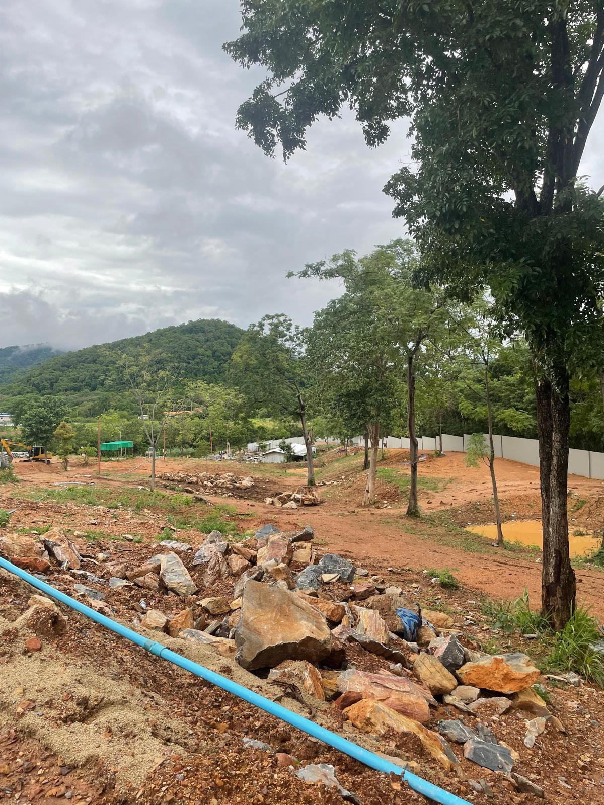
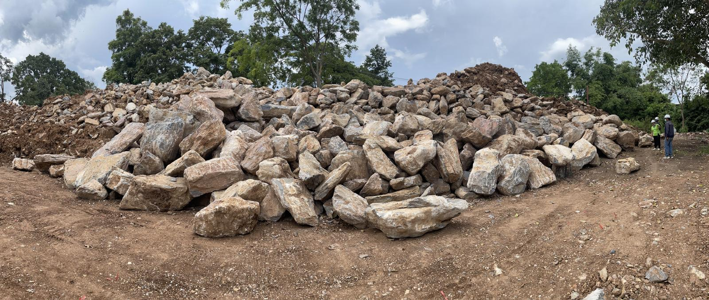
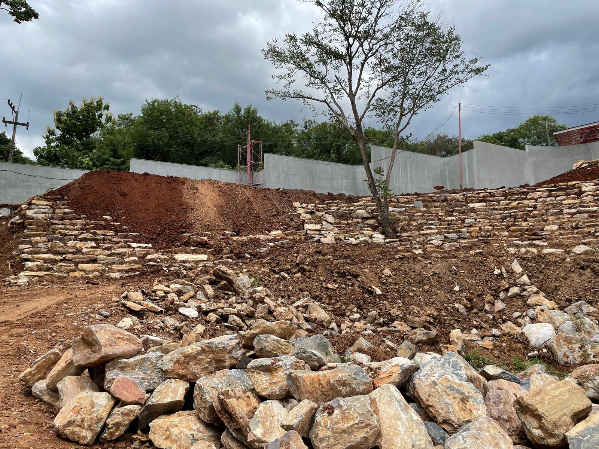